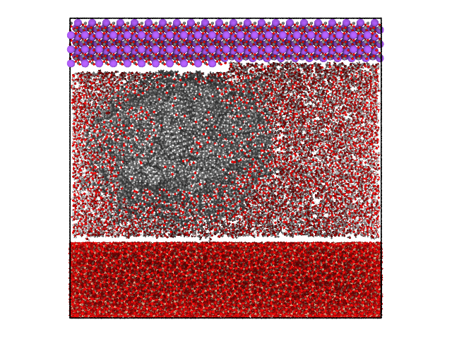

Soduim chlorate crystal lying on a hydrocarbon blob¶
from molecular_builder import create_bulk_crystal, carve_geometry, fetch_prepared_system, write, pack_water
from molecular_builder.geometry import BoxGeometry
blob = fetch_prepared_system("ch_blob/10nm", type_mapping=[(1, 6), (2, 1)])
blob.positions[:,2] += 37
slab = fetch_prepared_system("vashishta_1990_like_amorphous_silica/quench_950K", type_mapping=[(1, 14), (2, 8)])
slab.cell[2,2] += 105
sodium_chlorate = create_bulk_crystal("sodium_chlorate", size=(slab.cell[0,0] ,slab.cell[1,1], 25), round="down")
carve_geometry(sodium_chlorate, BoxGeometry([slab.cell[0,0]*3/4, slab.cell[1,1]/2, 0], [slab.cell[0,0]/2, slab.cell[1,1]+100, 5]), side="in")
sodium_chlorate.translate((0,0,118))
atoms = (slab + blob) + sodium_chlorate
pack_water(atoms, 10000,pbc=2.0, tolerance=2.0)
write(atoms, "sodium_chlorate_hydrocarbon_blob_water.png",
camera_dir=(0,1,0),
viewport_type="orthogonal",
bond_specs=[("O", "H", 0.95), ("Si", "O", 1.9)],
atom_radii=[("Si", 0.2), ("O", 0.6)])
